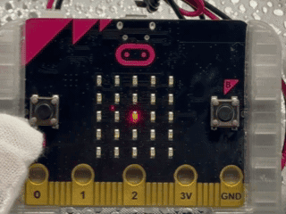
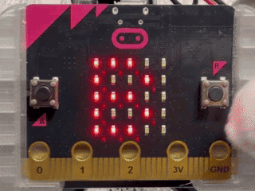
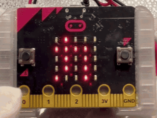
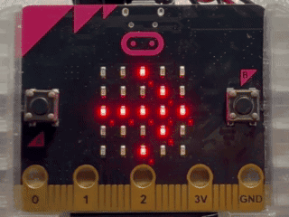
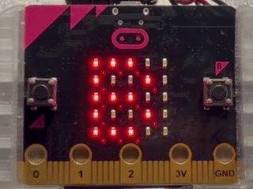

かたむきを調べるすいへいき 傾きを調べる水平器
このプログラムでは、micro:bitのかそくどセンサーを使って、地面（土）のかたむきがゆるやかか急かを、1つのLEDの動きで見えるようにします。 このプログラムでは、micro:bitの加速度センサーを使って、地面（土）の傾きが緩やかか急かを、1つのLEDの動きで見えるようにします。
使い方
- micro:bitを左にかたむけると、LEDが左へ動く micro:bitを左に傾けると、LEDが左へ動く
- micro:bitを右にかたむけると、LEDが右へ動く micro:bitを右に傾けると、LEDが右へ動く
- かたむきを小さくすると、LEDがゆっくり動く 傾きを小さくすると、LEDがゆっくり動く
- かたむきを大きくすると、LEDが速く動く 傾きを大きくすると、LEDが速く動く
- micro:bitを水平にすると、LEDが中央に近づく micro:bitを水平にすると、LEDが中央に近づく

ねらい
- 地面のかたむきと水の流れる速さのかんけいのりかい 地面の傾きと水の流れる速さの関係の理解
- ゆるやかなしゃめんと急なしゃめんのちがいのせつめい 緩やかな斜面と急な斜面の違いの説明
- センサーのすうちの動きを見える化するたいけん センサーの数値の動きを見える化する体験
チャレンジ
- ゆるやかと急のさかい目の角度をかえる 緩やかと急の境目の角度を変える
- LEDの速さのへんかを調整して見やすくする LEDの速さの変化を調整して見やすくする
- 上下のかたむきでも同じモデルを作ってみる 上下の傾きでも同じモデルを作ってみる
月のみちかけを学ぼう 月の満ち欠けを学ぼう
このプログラムでは、micro:bitを使って、月のみちかけをLEDの形でじゅんばんにたしかめます。月のひょうじは新月→三日月→じょうげんの月→十三夜→まん月→ねまち月→かげんの月→有明月→新月のじゅんです。 このプログラムでは、micro:bitを使って、月の満ち欠けをLEDの形で順番に確かめます。月の表示は新月→三日月→上弦の月→十三夜→満月→寝待月→下弦の月→有明月→新月の順です。
使い方
- さいしょは「B」と「→」のこうごのひょうじ、Bボタンで月のひょうじを始める 最初は「B」と「→」の交互の表示、Bボタンで月の表示を始める
- Bボタンをつづけておして、月の形のへんかをじゅんばんに見くらべる Bボタンを続けて押して、月の形の変化を順番に見比べる
- 1しゅうが終わってさいしょの画面ひょうじにもどる 1周が終わって最初の画面表示に戻る

ねらい
- 月のみちかけのじゅんばんのりかい 月の満ち欠けの順番の理解
- ボタンそうさでひょうじを切りかえるくり返しのりかい ボタン操作で表示を切り替える繰り返しの理解
- 合図のアニメひょうじで開始としゅうりょうの区切りをそろえるたいけん 合図のアニメ表示で開始と終了の区切りを揃える体験
チャレンジ
- 「B」と「→」のこうごのひょうじの速さをかえるなどの見え方のくふう 「B」と「→」の交互の表示の速さを変えるなどの見え方の工夫
- Aボタンで1つ前の形にもどす仕組みのついか Aボタンで1つ前の形に戻す仕組みの追加
- 月の形の名前を「カタカナ」のドット絵でひょうじ 月の形の名前を「カタカナ」のドット絵で表示
0度・45度・90度をたしかめよう 0度・45度・90度を確かめよう
このプログラムでは、micro:bitの角度センサーを使って、0度・45度・90度の角度をたしかめます。 このプログラムでは、micro:bitの角度センサーを使って、0度・45度・90度の角度を確かめます。
使い方
- 「カクド」のひょうじのあとに出るもくひょう角度、0・45・90のじゅんにちょうせん 「カクド」の表示のあとに出る目標角度、0・45・90の順に挑戦
- micro:bitを回転させてもくひょう角度に近づける micro:bitを回転させて目標角度に近づける
- 上から3行目のLED1行がうすい（はなれている）か明るい（近づいている）かをかくにん 上から3行目のLED1行が薄い（離れている）か明るい（近づいている）かを確認
- Bボタンではんていけっかのうれしい顔（せいかい）・悲しい顔（ふせいかい）をひょうじ Bボタンで判定結果の嬉しい顔（正解）・悲しい顔（不正解）を表示
- Aボタンでもくひょう角度をリセットして、0度にもどる Aボタンで目標角度をリセットして、0度に戻る

ねらい
- 角度（0度・45度・90度）のかんかくづくり 角度（0度・45度・90度）の感覚づくり
- 回転そうさで角度を調整するたいけん 回転操作で角度を調整する体験
- もくひょう角度とげんざい角度のさの考え方のりかい 目標角度と現在角度の差の考え方の理解
チャレンジ
- 明るさ（40）をかえる見やすさ調整 明るさ（40）を変える見やすさ調整
- せいかいのはんい（10度いない）を5度や15度にかえるじょうけん調整 正解の範囲（10度以内）を5度や15度に変える条件調整
- もくひょう角度を0度・30度・60度・90度などにふやすせっていへんこう 目標角度を0度・30度・60度・90度などに増やす設定変更
えいたんご2たくクイズ 英単語2択クイズ
このプログラムでは、micro:bitを使って、えいたんごクイズを2たくで答えます。 このプログラムは、micro:bitを使って、上の行を左右に動く鬼を狙い、豆を投げて8秒以内の得点を楽しむゲームです。
使い方
- さいしょは「B」と「→」をこうごにひょうじ、Bボタンでクイズ開始 最初は「B」と「→」を交互に表示、Bボタンでクイズ開始
- えいたんご「APPLE」がスクロールでひょうじされる 英単語「APPLE」がスクロールで表示される
- 「A」のひょうじのあとに「リンゴ」がひょうじされる 「A」の表示のあとに「リンゴ」が表示される
- 「B」のひょうじのあとに「イチゴ」がひょうじされる 「B」の表示のあとに「イチゴ」が表示される
- 「A」と「B」がこうごにひょうじされるあいだ、AボタンまたはBボタンでせいかいをえらぶ 「A」と「B」が交互に表示される間、AボタンまたはBボタンで正解を選ぶ

ねらい
- えいたんごと意味をむすびつけるたいけん 英単語と意味を結びつける体験
- 2たくで答えをえらぶはんだんのたいけん 2択で答えを選ぶ判断の体験
- ひょうじのじゅんばんをそろえて学習をくり返すたいけん 表示の順番を揃えて学習を繰り返す体験
チャレンジ
- 問題の数をふやしてくり返し練習できるようにする 問題の数を増やして繰り返し練習できるようにする
- えいたんごをほかのたんごに入れかえる 英単語をほかの単語に入れかえる
- せいかいのときだけ次の問題へ進むれんぞくクイズへのはってん 正解のときだけ次の問題へ進む連続クイズへの発展
カタカナで表そう カタカナで表そう
このプログラムでは、micro:bitを使って、カタカナの「アリガトウ」を1文字ずつLEDでひょうじします。 このプログラムでは、micro:bitを使って、カタカナの「アリガトウ」を1文字ずつLEDで表示します。
使い方
- さいしょは「B」と「→」をこうごにひょうじ、Bボタンで開始 最初は「B」と「→」を交互に表示、Bボタンで開始
- 「ア」「リ」「ガ」「ト」「ウ」をじゅんばんにひょうじ 「ア」「リ」「ガ」「ト」「ウ」を順番に表示
- 1文字ごとに暗転で区切りが入る 1文字ごとに暗転で区切りが入る
- ひょうじが終わったあとにさいしょの「B」と「→」の画面にもどる 表示が終わったあとに最初の「B」と「→」の画面に戻る

ねらい
- カタカナ文字の形をLEDで表す学習 カタカナ文字の形をLEDで表す学習
- 決まったじゅんばんでひょうじするてじゅんのりかい 決まった順番で表示する手順の理解
- 開始の区切りをそろえるたいけん 開始の区切りを揃える体験
チャレンジ
- ひょうじ時間をかえて見やすさのくふう 表示時間を変更して見やすさを工夫
- 文字の間の暗転時間をかえる区切りのくふう 文字の間の暗転時間を変える区切りを工夫
- 自分のメッセージをカタカナのドット絵で作る 自分のメッセージをカタカナのドット絵で作る
本情報の内容 (添付文書、リンク先などを含む) は、作成日時点でのものであり、予告なく変更される場合があります。